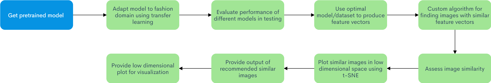
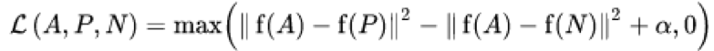
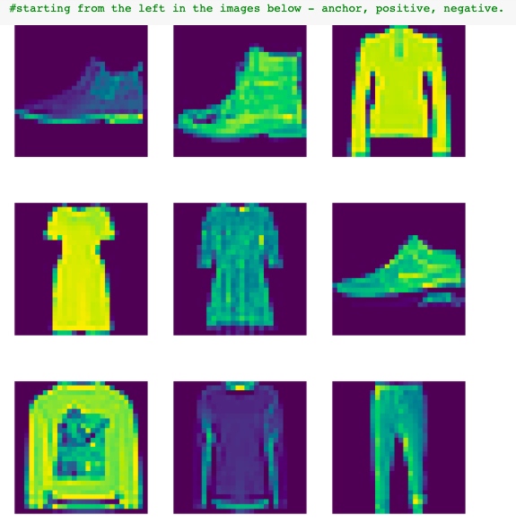
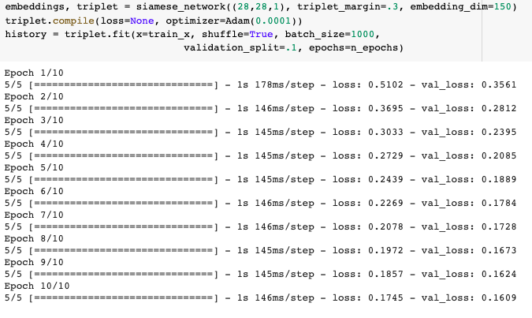
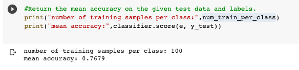
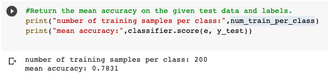
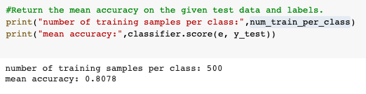

Final Report
Visual Search Based Recommendation System
Syeda Arzoo Irshad, Noah Meine, Jared VeerhoffFall 2020 ECE 4554/5554 Computer Vision: Course Project
Virginia Tech

Abstract
Many current visual recommendation systems do not allow a user to visualize the difference or similarity between images. In this project, we implement our own visual search based recommendation system. This project will allow a user to visualize the similarity between their input image and the images in the database in low-dimensional space. Our project is tailored to work with fashion items (clothes, brands, outfits), as there are many exciting applications for visual recommendation in the fashion/e-commerce domain.We use a pre-trained model in image classification based on the ResNet18 model because of its strong performance in visual recognition. We then implement transfer learning to optimize its performance with fashion items by using the DeepFashion and Fashion MNIST datasets. We implement our own algorithm to generate image feature vectors and use Spotify's Annoy library to access similar images using approximate nearest-neighbor.
Additionally, we compare the above transfer learning based model with a Siamese neural network trained using Triplet loss based approach The input to the model will consist of a triplet of images – query image, positive image , and a negative image . The model is trained on the Fashion MNIST dataset to generate embeddings for an input image using the triplet loss based approach such that the distance between embeddings of similar images (query and positive) will be lesser than that of dissimilar images (query and negative image).
Finally, we adopt the model with the better performance to develop a visual search based recommender to provide the user with the top-N most recommended images, and perform a low-dimensional visualization of image similarity using t-SNE.
We have deployed our project as a self-contained application using Google Colab. Our application achieves a high level of qualitative accuracy for image recommendations. After applying transfer learning, our model achieves a top-5 accuracy of 91% on the DeepFashion dataset (see experimental results). Our application is scalable and allows users to query similar images quickly.
Introduction
Text based queries often do not yield accurate results. For instance, an individual comes across a dress someone else is wearing or a show piece in a store that is not for sale. A text-based search for this object on the internet can yield closely related items but may not retrieve the exact item, and results will vary based on an individual's choice of words. Visual-based search systems can solve this problem by allowing the user to query an image instead of text and retrieve more accurate and consistent results. This project aims to develop a visual search based recommender system that will allow the user to input a query image and generate a list of top-N most similar images from our database.This project can find use in applications such as Pinterest, where users can capture images on their phone cameras and upload it on the app to find similar images. An online clothing store could implement a visual reccomendation system to help a customer find something they might only have a picture of.
The area of convolutional neural networks (CNN) is a rapidly changing field with increasingly more applications each year. One of the challenges of working with CNNs is the high demand for resources, especially when working with images. Low-dimensional space in this report refers to the reduction of data in high-dimensional space down to something easily understandable. In this case we reduce from 512 dimensions down to three, which allows for us to provide the end user with a simple three-dimensional plot using Plotly.
Approach
The flowchart below demonstrates the approach we have followed to accomplish our project goals.

The technical approach we followed began with using a pretrained model (ResNet18) on the ImageNet dataset and adapting it to the fashion domain using transfer learning. To do this, we utilized multiple tools and services. We used python and relevant data processing libraries (numpy, pandas, matplotlib, etc.) to download and organize the DeepFashion dataset. Then, we used FastAI and PyTorch libraries to simplify deep learning tasks such as generating image embeddings, performing transfer learning, and saving feature vectors from our model easily. In addition, we used cloud computing services such as Google Colab for access to optimized GPU hardware and for hosting our application. In order to manage the DeepFashion dataset, we utilized reference material from Building a Personalized Real-Time Fashion Collection Recommender.
After applying transfer learning, we evaluated the performance and cost of different models.
The Siamese Neural Network (SNN) was first proposed in 1993 to verify signatures written on a pen-input tablet. The architecture consists of two or more ‘identical’ subnetworks, i.e., they possess the same configuration and share the same parameters and weights. SNN learns to find the similarity between the inputs by comparing their corresponding feature vectors generated from the subnetworks. Siamese neural networks are also known to be more robust to class imbalance and can effectively capture the semantic similarity between the images in their respective embeddings. Conventional neural networks need to be retrained when a new class is added to or removed from the database. Conversely, SNNs can classify new classes of data without needing to be retrained as they learn a ‘similarity function’ that determines if two images belong to the same class.
The Trip Loss technique was introduced in the Facenet paper in 2015. In the triplet loss function, an anchor image is compared to a positive input and a negative input image. The distance between the anchor and positive input is minimized while the distance between the anchor and negative input is maximized. The loss function is defined as below –

In the above equation, alpha is the margin that specifies how further apart must the similar and dissimilar pairs of the triplets be in the distribution space. The margin hyperparameter helps distinguish the two images better. f(A), f(N), and f(P) are the feature embeddings of the anchor, positive and negative images.
During the training process, an images triplet is fed into identical models. Since the weights of the models are identical, we use a single model and feed the three images sequentially. Following this, the loss is calculated as above such that the distance between anchor and positive image is minimized and that of anchor and negative images is maximized. Using the loss function, we calculate the gradients and update the weights and biases of the network. In this experiment, we have taken an anchor image and randomly sampled positive and negative images to compute the loss function and update the gradients.
The embeddings generated for each of the images serve as their latent feature representations. A comparison of these embeddings can reveal if two images belong to the same class or not. The dimension of the embeddings is another hyperparameter of our network that can be tuned to optimize the system performance. SNNs work well in scenarios where the classes change too frequently to be constantly retrained.
We then selected the optimal model and produced a library of feature vectors for each image in our dataset. We compiled these feature vectors in a database of recommended images to choose from, and stored relevant image data, embeddings, and labels. Our next step was to allow the user to obtain recommended images from an input image outside of our dataset. Given the size of the DeepFashion data set and the hardware constraints of our system, we leveraged Spotify’s open-source Annoy (Approximate Nearest-Neighbor) library. Using Annoy, we created a query tree full of feature vectors from our model. Then we used our model to generate a feature vector for a user input image and Annoy to obtain the top-N most similar images. The last step is to utilize the python sklearn libraries’ popular t-SNE framework to generate a visualization of image similarity in low-dimensional space. We return the user a list of similar images and the t-SNE plot.
With the system now working, the model was replaced with its pre-transfer learning counterpart. This was done to ensure there was noticeable improvement in qualitative performance as a result of the transfer learning. Identical input images were provided to the two systems and the resulting top-N similar images were compared.
Obstacles
One obstacle we faced at the beginning of the project was trying to manage the DeepFashion dataset given its large size and computational requirements. To overcome this obstacle, we utilized the reference material listed under the approach. Another obstacle we encountered while attempting to implement transfer learning was trying to speed up the training process in order to perform more experiments. We overcame this obstacle with the help of Google Colab, which allows free access to optimized GPU hardware.
Experiments and Results
ResNet18 and DeepFashionThe DeepFashion dataset contains over 200K images with descriptive labels across 46 different categories. This dataset is well known for complex image classification and similarity problems. The images are different sizes, making it a good fit for our intended application. The set of images we used to train our model consisted of 209,222 training images, 40,000 validation images, and 40,000 test images. Next, we used this dataset to conduct transfer learning on the pretrained model. In order to apply transfer learning, we first determined the learning rate we should limit our model to. Below is a plot of our learning rate findings. Tweaking the learning rate value led to a change in the total time it took to train our model.
Using this learning rate, we applied transfer learning. The metrics we used to evaluate the model were accuracy, top-1 accuracy, and top-5 accuracy. We included top-N accuracy because it is relevant to our desired use case. We want to provide the user with a collection of similar images, not a single prediction. The complete summary of the transfer learning process is shown below.
----------------------------------------------------------------------------------------------------
epoch train_loss valid_loss accuracy top_1_accuracy top_5_accuracy time
0 1.639774 1.476857 0.566800 0.566800 0.885500 16:57
1 1.583464 1.486946 0.565150 0.565150 0.876175 16:55
2 1.583681 1.493149 0.559150 0.559150 0.874550 17:00
3 1.532783 1.467412 0.576425 0.576425 0.879400 17:13
4 1.522732 1.369081 0.596525 0.596525 0.894675 17:06
5 1.461197 1.363835 0.597000 0.597000 0.895925 16:55
6 1.406832 1.316558 0.610000 0.610000 0.903850 16:54
7 1.371371 1.274097 0.623450 0.623450 0.911050 17:05
8 1.360969 1.248707 0.631025 0.631025 0.913025 17:02
9 1.354846 1.246133 0.632725 0.632725 0.913025 16:59
----------------------------------------------------------------------------------------------------
epoch train_loss valid_loss accuracy top_1_accuracy top_5_accuracy time
0 1.639774 1.476857 0.566800 0.566800 0.885500 16:57
1 1.583464 1.486946 0.565150 0.565150 0.876175 16:55
2 1.583681 1.493149 0.559150 0.559150 0.874550 17:00
3 1.532783 1.467412 0.576425 0.576425 0.879400 17:13
4 1.522732 1.369081 0.596525 0.596525 0.894675 17:06
5 1.461197 1.363835 0.597000 0.597000 0.895925 16:55
6 1.406832 1.316558 0.610000 0.610000 0.903850 16:54
7 1.371371 1.274097 0.623450 0.623450 0.911050 17:05
8 1.360969 1.248707 0.631025 0.631025 0.913025 17:02
9 1.354846 1.246133 0.632725 0.632725 0.913025 16:59
----------------------------------------------------------------------------------------------------
Finally, we evaluated our model in a variety of ways. First, we observed the confusion matrix generated from our model, and then plotted some of the top losses from our model. The confusion matrix and an array of the top losses can be seen below. Both images, along with the metrics from training indicate a reasonable level of performance from our model.
VGG16 and Fashion-MNIST
In order to perform transfer learning on the VGG16 model, we used the Fashion MNIST dataset. This dataset is well known for fashion related image classification and allows us to produce feature vectors well alongside the VGG architecture. The dataset contains a training set of 60,000 examples and a test set of 10,000 examples. Each example is a 28x28 grayscale image that contains a label from 10 possible classes. The training and test labels are from one of the following classes:
- 0 T-shirt/top
- 1 Trouser
- 2 Pullover
- 3 Dress
- 4 Coat
- 5 Sandal
- 6 Shirt
- 7 Sneaker
- 8 Bag
- 9 Ankle boot
Transfer Learning
Next, we adapted the dataset to support the base VGG16 model by adding an additional two color channels and scaling the images to 48x48 pixels using openCV methods. We then defined our base VGG16 model using pretrained weights and removed the top layer used for classification. In order to adapt the model to the Fashion MNIST dataset, we added several layers to flatten the last VGG16 output layer and classify the images into 10 classes. Below is a summary of the model that was created.
_________________________________________________________________
Layer (type) Output Shape Param #
=================================================================
vgg16 (Functional) (None, 1, 1, 512) 14714688
_________________________________________________________________
flatten_1 (Flatten) (None, 512) 0
_________________________________________________________________
fc1 (Dense) (None, 1024) 525312
_________________________________________________________________
predictions (Dense) (None, 10) 10250
=================================================================
Total params: 15,250,250
Trainable params: 7,614,986
Non-trainable params: 7,635,264
Layer (type) Output Shape Param #
=================================================================
vgg16 (Functional) (None, 1, 1, 512) 14714688
_________________________________________________________________
flatten_1 (Flatten) (None, 512) 0
_________________________________________________________________
fc1 (Dense) (None, 1024) 525312
_________________________________________________________________
predictions (Dense) (None, 10) 10250
=================================================================
Total params: 15,250,250
Trainable params: 7,614,986
Non-trainable params: 7,635,264
The next step in our approach was applying transfer learning. We used categorical (one hot) encoding for our training, validation, and test labels. In addition, we used a train/test split with a test size of 0.2. Here is an excerpt of our training script that uses the sklearn train_test_split() function.
x_train, x_validate, y_train_one_hot, y_validate_one_hot = train_test_split(
x_train, y_train_one_hot, test_size=0.2, random_state=13,
)
x_train, y_train_one_hot, test_size=0.2, random_state=13,
)
The metrics that we used to evaluate our model during the transfer learning procedure were categorical accuracy and categorical crossentropy for loss. We gathered data about the transfer learning process using tensorboard and performed testing on the model post-transfer learning as well. Below is a complete summary of the transfer learning procedure, including plots generated using tensorboard.
Epoch 1/12
375/375 [==============================] - 23s 62ms/step - loss: 0.4312 - categorical_accuracy: 0.8467 - val_loss: 0.3378 - val_categorical_accuracy: 0.8791
Epoch 2/12
375/375 [==============================] - 23s 61ms/step - loss: 0.2597 - categorical_accuracy: 0.9059 - val_loss: 0.2599 - val_categorical_accuracy: 0.9071
Epoch 3/12
375/375 [==============================] - 23s 62ms/step - loss: 0.2212 - categorical_accuracy: 0.9183 - val_loss: 0.2496 - val_categorical_accuracy: 0.9113
Epoch 4/12
375/375 [==============================] - 23s 62ms/step - loss: 0.1972 - categorical_accuracy: 0.9269 - val_loss: 0.2621 - val_categorical_accuracy: 0.9104
Epoch 5/12
375/375 [==============================] - 23s 62ms/step - loss: 0.1799 - categorical_accuracy: 0.9353 - val_loss: 0.2461 - val_categorical_accuracy: 0.9164
Epoch 6/12
375/375 [==============================] - 23s 62ms/step - loss: 0.1655 - categorical_accuracy: 0.9399 - val_loss: 0.2256 - val_categorical_accuracy: 0.9213
Epoch 7/12
375/375 [==============================] - 24s 63ms/step - loss: 0.1519 - categorical_accuracy: 0.9447 - val_loss: 0.2367 - val_categorical_accuracy: 0.9214
Epoch 8/12
375/375 [==============================] - 23s 63ms/step - loss: 0.1391 - categorical_accuracy: 0.9493 - val_loss: 0.2597 - val_categorical_accuracy: 0.9179
Epoch 9/12
375/375 [==============================] - 24s 63ms/step - loss: 0.1280 - categorical_accuracy: 0.9537 - val_loss: 0.2467 - val_categorical_accuracy: 0.9189
Epoch 10/12
375/375 [==============================] - 24s 63ms/step - loss: 0.1201 - categorical_accuracy: 0.9561 - val_loss: 0.2632 - val_categorical_accuracy: 0.9241
Epoch 11/12
375/375 [==============================] - 23s 63ms/step - loss: 0.1139 - categorical_accuracy: 0.9591 - val_loss: 0.3109 - val_categorical_accuracy: 0.9132
Epoch 12/12
375/375 [==============================] - 23s 63ms/step - loss: 0.1070 - categorical_accuracy: 0.9618 - val_loss: 0.2575 - val_categorical_accuracy: 0.9220
375/375 [==============================] - 23s 62ms/step - loss: 0.4312 - categorical_accuracy: 0.8467 - val_loss: 0.3378 - val_categorical_accuracy: 0.8791
Epoch 2/12
375/375 [==============================] - 23s 61ms/step - loss: 0.2597 - categorical_accuracy: 0.9059 - val_loss: 0.2599 - val_categorical_accuracy: 0.9071
Epoch 3/12
375/375 [==============================] - 23s 62ms/step - loss: 0.2212 - categorical_accuracy: 0.9183 - val_loss: 0.2496 - val_categorical_accuracy: 0.9113
Epoch 4/12
375/375 [==============================] - 23s 62ms/step - loss: 0.1972 - categorical_accuracy: 0.9269 - val_loss: 0.2621 - val_categorical_accuracy: 0.9104
Epoch 5/12
375/375 [==============================] - 23s 62ms/step - loss: 0.1799 - categorical_accuracy: 0.9353 - val_loss: 0.2461 - val_categorical_accuracy: 0.9164
Epoch 6/12
375/375 [==============================] - 23s 62ms/step - loss: 0.1655 - categorical_accuracy: 0.9399 - val_loss: 0.2256 - val_categorical_accuracy: 0.9213
Epoch 7/12
375/375 [==============================] - 24s 63ms/step - loss: 0.1519 - categorical_accuracy: 0.9447 - val_loss: 0.2367 - val_categorical_accuracy: 0.9214
Epoch 8/12
375/375 [==============================] - 23s 63ms/step - loss: 0.1391 - categorical_accuracy: 0.9493 - val_loss: 0.2597 - val_categorical_accuracy: 0.9179
Epoch 9/12
375/375 [==============================] - 24s 63ms/step - loss: 0.1280 - categorical_accuracy: 0.9537 - val_loss: 0.2467 - val_categorical_accuracy: 0.9189
Epoch 10/12
375/375 [==============================] - 24s 63ms/step - loss: 0.1201 - categorical_accuracy: 0.9561 - val_loss: 0.2632 - val_categorical_accuracy: 0.9241
Epoch 11/12
375/375 [==============================] - 23s 63ms/step - loss: 0.1139 - categorical_accuracy: 0.9591 - val_loss: 0.3109 - val_categorical_accuracy: 0.9132
Epoch 12/12
375/375 [==============================] - 23s 63ms/step - loss: 0.1070 - categorical_accuracy: 0.9618 - val_loss: 0.2575 - val_categorical_accuracy: 0.9220
Final test accuracy and loss.
Test loss: 0.26292872428894043
Test accuracy: 0.9182000160217285
Test accuracy: 0.9182000160217285
Siamese Neural Network with Triplet Loss
In this project, we’ve employed the FashionMNIST dataset to generate the triplet input images and train the Siamese neural network. There are two ways to generate triplets – offline and online triplet mining. In this experiment, we’ve used the offline approach, where the triplets are generated manually and then fit to the network.
Following are the model training results.


We also observed the following trend of increase in accuracy on increasing the number of training training samples per class for generating the triplets.   
Discussion of Models, Datasets, and Results
The Siamese network produced an accuracy of ~80% in comparison to the Transfer Learning based model (based on VGG16) which produced accuracy of ~92% on the FashionMNIST. Considering its superior performance and the potential computationally expensive procedure involved in generating triplets on the DeepFashion dataset, the Transfer Learning based approach was selected for the subsequent stage of building the visual search system.
When evaluating the pre-trained ResNet18 model without transfer learning as a feature vector generator, it is a clear failure. The top-N similar images do not bear much resemblance to the provided input image. Interestingly, the top-N similar images do seem to resemble each other somewhat. It can be concluded that performing transfer learning on the ResNet18 model resulted in a vast improvement over a naïve approach with the pre-trained model.
For our application, the ResNet18 model and DeepFashion dataset were selected for use in the final application. This is because the DeepFashion dataset is much more representative of a user image query than Fashion-MNIST, and produces a high level of accuracy. ResNet18 was selected over VGG16 because it was more efficient to train and use, while providing better results for our intented application.
Qualitative Results
Visual RecommendationsHere are several examples of two visual recommendations. In each recommendation, the user input image is listed on the left and the top 9 most similar images from the dataset are displayed next to it. Also find a t-SNE plot of the corresponding images below.
Here is an example of a failure case. Notice that the application is not well designed for images with significant background presence.
Here is an example of the visual reccomendation using the final ResNet18 model with transfer learning compared to a visual reccomendation using the base pre-trained ResNet18 Model.
Conclusion and Future Work
In this project we’ve successfully implemented multiple neural networks to determine the image similarity between different categories of images in a fashion dataset. We obtained accuracies of ~95% and ~82% on the Fashion MNIST dataset with the Transfer Learning and Siamese Networks respectively. Subsequently, we’ve developed a visual search based recommender system using the Transfer Learning model on the more extensive ‘DeepFashion’ dataset and achieved an accuracy ~88% (top_5_accuracy).The future scope of this project includes deploying the machine learning model online using an application like Anvil It is an interactive tool that allows connecting a web application to a colab notebook. The web application will retrieve a user query in real-time and send the data to the colab notebook. where the top-n similar items from the DeepFashion database will be computed using the Transfer Learning model and sent back to be displayed on the web application.
References
Fashion MNISThttps://www.kaggle.com/zalando-research/fashionmnist
A Comprehensive Hands-on Guide to Transfer Learning with Real-World Applications in Deep Learning | by Dipanjan (DJ) Sarkar | Towards Data Science
https://towardsdatascience.com/a-comprehensive-hands-on-guide-to-transfer-learning-with-real-world-applications-in-deep-learning-212bf3b2f27a
Transfer Learning with Convolutional Neural Networks in PyTorch | by Will Koehrsen | Towards Data Science
https://towardsdatascience.com/transfer-learning-with-convolutional-neural-networks-in-pytorch-dd09190245ce
Embeddings Visualization with Fashion MNIST
https://github.com/markjay4k/Fashion-MNIST-with-Keras/blob/master/pt3%20-%20FMINST%20Embeddings.ipynb
Visualizing Data using the Embedding Projector in TensorBoard
https://www.tensorflow.org/tensorboard/tensorboard_projector_plugin
Learning Fine-grained Image Similarity with Deep Ranking
https://arxiv.org/pdf/1404.4661.pdf
Deep Learning based Large Scale Visual Recommendation and Search for E-Commerce
https://arxiv.org/pdf/1703.02344.pdf
Building a Personalized Real-Time Fashion Collection Recommender
https://towardsdatascience.com/building-a-personalized-real-time-fashion-collection-recommender-22dc90c150cb